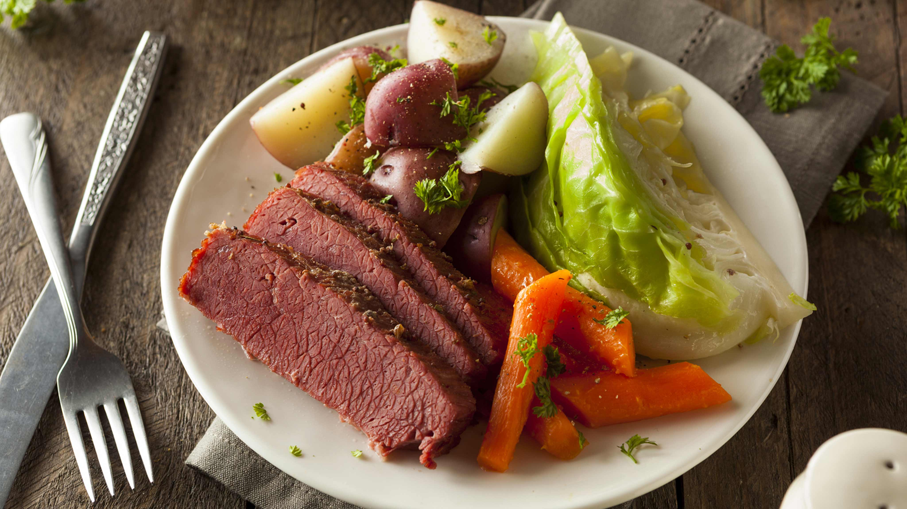

Corned Beef and Cabbage
Home Kitchen

Traditional Corned Beef and Cabbage
The quintessential holiday meal, this dish has been practically synonymous with American St. Patrick’s Day since the mid to late 1800s. When many Irish immigrated to America, they settled in predominantly Jewish neighborhoods, and began buying their meat from Kosher butchers. When St. Patrick’s Day was pivoted from a religious holiday to a heritage celebration, they combined their neighbors’ corned beef with their beloved potatoes and the cheapest vegetable they could find, and corned beef and cabbage as we know it today was born.
Ingredients
- Carrots
- Yellow onion
- Small potatoes (red or purple)
- Corned beef round (leaner) or beef brisket (fattier)
- Beer (a brown ale, or lager work great, but even Bud Light will do)
- Fresh thyme
- Head of cabbage
- Sour cream
- Prepared horseradish
Steps
- Arrange the carrots, onion, potatoes, and corned beef (fat-side up) in the slow cooker.
- Add the pickling spices and pour the beer over everything.
- Sprinkle with fresh thyme leaves.
- Cook on HIGH for 4-5 hours or until the corned beef is tender. Most recipes recommend you cook the brisket for 4 to 4 ½ hours on high in the slow cooker. In doing so you’ll have nicely cut portions that while tender, simply doesn’t fall apart when stuck with a fork. However, if you’re like me and want that fall-apart texture like the corned beef in the photo below, the longer you cook it, the more tender it will be.
- Place the cabbage on top of the beef and continue cooking for 1 more hour until the cabbage is tender.